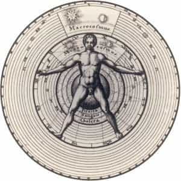

Nestled comfortably in the center of history sits a thousand-year high point. Often erroneously named the “dark ages,” this millennium was the greatest source of light in the history of Western civilization. Though miles of library shelves have been filled with medieval writings on the skins of goats and cattle, a small taste of their mottos is enough to demonstrate their wisdom.
1. “Ne gladium tollas, mulier.” (Erasmus, Adagia)
Erasmus of Rotterdam was a Dutch priest and mastermind polymath from the fifteenth century. In his book of sayings, the Adagia, he coined the phrase “Woman, don’t pick up that sword.”
On its surface, this kind of brazen sexism and patriarchalism would be red pilled enough in itself. Of course women should not be fighting in tournaments or serving on the front lines of the military. They should not be cheapening their femininity and emasculating men by putting their lives and nice-looking faces in harm’s way.
The genius part of this quote, though, is that it’s not about women in combat at all. Obviously, in Erasmus’ day, the armies of medieval kingdoms did not have the problem of pussified, politically correct gender-diversification policies. There would be no need to oppose “women in combat.” Rather, what Erasmus is getting at is that you shouldn’t offer assistance if you’ve got nothing to offer.
Don’t ask me if I need a hand with my bags if you’ve never lifted a weight in your life. Don’t tell me how to vote or how to live if you’re a brain-dead celebrity with four divorces and a drug addiction. Don’t act like you’re the gatekeeper of conservatism if you’ve been rolling over and playing dead since Bill Clinton was elected. Woman—just put it down.
2. “Per me reges regnant.” (Charlemagne, Aachen Town Hall)
I’ve walked all over the German town of Aachen, appreciating the grandeur of its soaring towers and deep cultural roots. It was the seat of Emperor Charlemagne, the first Holy Roman Emperor known for uniting Western Christendom under his rule, crushing the Saracens and Moors, and sparking a cultural revival of art and learning known as the Carolingian Renaissance.
Over the front entrance of Aachen’s 1200-year-old town hall is Charlemagne’s motto, an inscription from the Book of Proverbs: “through me kings rule.”
Later dynasties adopted this motto as well.
Vast as Charlemagne’s military and economic power was, he acknowledged first and foremost that his authority to rule came from God. Unlike the ignorant and opportunistic political philosophers of the so-called enlightenment, who thought that the sovereign ruled solely because the people allowed him to, Charlemagne understood that all rulers are illegitimate unless God delegates His power to them. No king deserves recognition by his subjects unless he himself recognizes that he is a subject in the kingdom of heaven.
Modernity and its pestilent secularism demands that “separation of Church and State” be defended at all costs. What they fail to realize is that the two can never be separated, only one subjugated to the other. In the absence of God’s righteous headship, the State becomes the Church. This is modern America and most Western nations. It has led us to a self-destructive place.
I saw a garage door in Aachen with graffiti painted on it, depicting Charlemagne holding his famous globus cruciger (ball and cross), which represents the Church presiding over the State. Next to it was painted a hand flipping the emperor the bird. Here was a resident of Charlemagne’s own city, one of the great centers of cultural heritage on earth, so full of spite for their own patrimony that they could only react with mindless hate.
In rejecting history, the Germans have failed to learn all but its most recent lessons. Merkel’s weak and dissipated Germany will eventually fall, and its cultural treasures will be pillaged. When that day comes, they will beg the spirit of Charlemagne to return.
3. “Ut superius sic inferius.” (Hermes Trismegistus, Smagdarine Tablet)
This cryptic phrase from the esoteric Smagdarine Tablet (of dubious late antique origins) can be taken in several different ways. Translated simply, “as above, so below,” it was originally meant to express the parallels between microcosms and the macrocosm in ancient natural sciences.
Just as humans manipulate musical notes, so the planets move according to the “music of the spheres.” Just as we have our loftier body parts (heart, brain) higher up on their body, so do the heavens become loftier the higher one travels (to the primum mobile, or first mover). And so on. Basically, there is an aesthetic, logical, and moral order to everything, consistent throughout the universe.

Man, the microcosm, posed atop the spheres, the macrocosm.
The phrase has also been adapted for Christian use, given its uncanny similarity to the line in Jesus Christ’s Our Father, “thy will be done, on earth as it is in heaven.” Thus did Christ place human action in the context of the Divine Will, as if to say remind us that the good we do is part of God’s master plan, and our evil is fighting it. Christian theologians like St. Augustine took the phrase even further, such as when he argued that the threefold human faculties of memory, intellect, and will were a mirror for the Holy Trinity. As above, so below.
Modern man perceives the world in a much different way. In fact, the words of the ancient Greek philosopher Protagoras summarize the modern mindset rather well: “Man is the measure of all things.” Plato and Aristotle both criticized him for this relativism, but it appears as though Protagoras’ spirit lives on. For modern man, part of taking the red pill, and piercing the modern fog, means acknowledging a higher power that orders and moves the universe.
4. “Ora et labora.” (St. Benedict of Nursia, Regula)
Amid the wreck of the old Roman Empire, a very ordinary figure did something extraordinary: he left. Benedict was a noble in the Italian city of Nursia who realized that he needed to stop running the aristocratic rat race of struggling for power with all the money-hungry merchants and petty bureaucrats in his city.
He took the ultimate red pill and realized that he could acquire something of far more value if he could just find stillness, so he journeyed far into the countryside to live by a simple set of practices known as his Rule. He was joined by many others, and soon, Benedictine monasticism was the most widespread cultural movement in history.
Benedict’s famous injunction, “work and pray,” perfectly captures the necessity of stillness. Those who only work fritter their lives away serving corporate overlords and pencil-pushers while suppressing other deep, human needs. Together, work and prayer are two halves of a whole: fervent ambition to accomplish and ascend, along with prayerful recognition that this life is not all there is, and what comes after is far more important.
It is interesting that Benedict, who left the world to find peace and stillness, became the founder of a monastic order that built amazing structures, produced brilliant writings, filled positions of leadership and influence, acquired great riches, developed genius technology, and painted beautiful artwork.
Go forth and get medieval
Armed with these and other weapons of wisdom from the middle ages, you are equipped to defend yourself against modern confusion and degeneracy by having an actual worldview that is both coherent and sound.
Remember that you are not a lonely soul wandering in a wasteland; you are a created being in a vast natural order ruled by a deity. If your mind contains that fact alone, you are already more red-pilled than the vast majority of proles walking today’s world.
Read More: How To Restore Civilization By Following St. Benedict’s Example